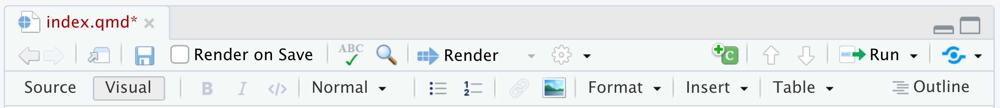
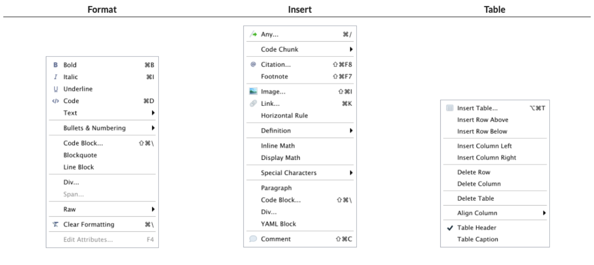
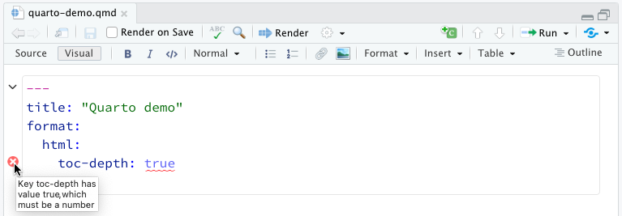
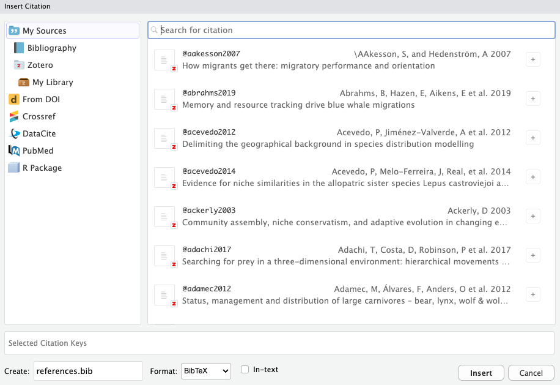

2 * 2[1] 4This part of the course is designed to provide an introduction to Quarto, a modern, open-source scientific and technical publishing system. Participants will learn the basics of creating dynamic documents, integrating code and text, and producing reproducible reports in multiple formats.
In addition to learning how to use Quarto, this section will also cover some essential first steps for practicing reproducible research, including the importance of literate programming, documenting analysis workflows, and properly licensing and sharing materials.
Some of the materials and ideas included here are inspired by openly available resources shared under Creative Commons licenses.
Specifically, parts of this course draw inspiration from:
Quarto is a dynamic document publishing system that allows you to create reports, books, manuscripts, presentations, and websites. It is a very versatile tool that supports multiple programming languages (R, Python, Julia, etc.) and output formats (HTML, PDF, Word, etc.). Quarto is based on R Markdown but offers a number of improvements and new features that make it more powerful and flexible. It can be used in different workspaces (e.g., RStudio, Jupyter) and has a visual editing interface in RStudio.

Quarto is an ideal tool for creating reproducible scientific documents and for collaborative work. It allows you to integrate code, text, and results into a single document, making it easier to produce scientific reports and publications. In addition, Quarto is compatible with Git and GitHub, enabling version control and efficient collaboration with others.


Quarto (https://quarto.org/) began as an open-source project in 2021 by Posit Software (formerly RStudio) and is based on over 10 years of experience with R Markdown. Quarto functions as an open-source scientific and technical publishing system built on top of Pandoc (https://pandoc.org). It converts plain text formats (e.g., .md, .Rmd) or mixed formats (e.g., .ipynb) into static reports and more. It can interweave narrative text and code to produce elegantly formatted results in the form of documents, web pages, blog posts, books, and so on.
The Quarto file extension is .qmd, and it uses Lua filters, which is Pandoc’s extension language (https://quarto.org/docs/extensions/lua.html). To do this, Quarto uses an engine like knitr to execute the code and generate a temporary .md output. The .md file is then processed by Pandoc and Quarto’s Lua filters, plus Bootstrap CSS for HTML or LaTeX for PDF. Lua filters written by R/Python/Julia developers should be interchangeable between formats — they are typically not language-specific.

Quarto comes pre-installed with the latest versions of RStudio (v2022.07 and later). However, if you want to use it in other interfaces as well, you can follow the installation instructions on the official website: https://quarto.org/docs/get-started/.
To use Quarto from within R, you need to have the rmarkdown package installed:
#|eval: false
install.packages("rmarkdown")You can also verify the Quarto installation and its location with the following command:
#|eval: false
quarto::quarto_path()The main difference between Quarto and R Markdown is that Quarto was designed for collaboration across multiple communities (i.e., not just R or Python users) and uses a shared syntax and format across different languages. Additionally, as more capabilities were added to R Markdown through external R packages, the syntax for basic tasks became inconsistent. Some differences between Quarto and R Markdown in terms of code are:Diferencias clave entre R Markdown y Quarto
YAML structure - both follow key: value but Quarto is more flexible and nested
code chunk header syntax - #| syntaxis (hash pipe). This is the preferred syntax in Quarto, although it is compatible with the older R Markdown syntax. The hash pipe adds more consistency across engines (Jupyter, knitr) and gives us more control over the order and spacing of chunk options (it’s not limited to a single line of options). Each #| line is interpreted as a key: value pair.
Enhanced tab completion: start typing a word and press Tab to auto-complete, or use Ctrl + Space to view all available options.
2 * 2[1] 4.Rmd files?No problem! Most existing .Rmd or .ipynb files can be converted as-is using Quarto. To do this from the terminal command line, type:
quarto render file.Rmd --to html
Additionally, there are various options for converting .Rmd files to .qmd:
.Rmd to .qmd (this will always use Quarto for rendering)knitr::convert_chunk_header("file.Rmd", "file.qmd")You don’t have to convert the syntax of all your old documents. Quarto is backward compatible with R Markdown.

üìù Your turn
To create a Quarto document in RStudio, follow these steps:
In RStudio, go to File → New File → Quarto Document
A window will open where you can choose the type of document you want to create (for example, a report, a presentation, etc.).
Select the type you want and click OK. A file with the extension .qmd (Quarto Markdown) will be created, containing a basic document structure.
Rendering a Quarto file in RStudio via the Render button calls quarto render in a background job, preventing Quarto rendering from cluttering up the R console, and gives you and easy way to stop:
Option 1: In RStudio as a background job, and preview the output.
Option 2: In the Terminal via quarto render:
quarto render document.qmd # defaults to html
quarto render document.qmd --to pdf
quarto render document.qmd --to docxquarto R package:library(quarto)
quarto_render("document.qmd") # defaults to html
quarto_render("document.qmd", output_format = "pdf")üìù Your turn
hello-penguins.qmd.quarto render, andquarto::quarto_render().It contains three types of content:
Metadata: YAML header surrounded by —s.
Markdown. Text mixed with simple text formatting like ## heading, bolds and italics.
Code: Executed via knitr or jupyter
Weave it all together, and you have beautiful, powerful, and useful outputs!
---
title: "Hello, Penguins"
format: html
execute:
echo: false
---
## Meet the penguins
The __penguins__ data contains size measurements for
penguins from three islands in the Palmer Archipelago,
Antarctica.
The _three_ species of penguins have quite distinct
distributions of physical dimensions (@fig-penguins).
#| label: fig-penguins
#| fig-cap: "Dimensions of penguins across three species."
#| warning: false
library(tidyverse, quietly = TRUE)
library(palmerpenguins)
penguins |>
ggplot(aes(x = flipper_length_mm, y = bill_length_mm)) +
geom_point(aes(color = species)) +
scale_color_manual(
values = c("darkorange", "purple", "cyan4")) +
theme_minimal()
The YAML header is demarcated by three dashes (—) on either end. It informs on some documents meta-data and sets up many generic and output format specific options. The YAML consists of key: values pairs. The colon and space are required.
YAML header can be very simple
“Yet Another Markup Language” or “YAML Ain’t Markup Language” is used to provide document level metadata.
---
title: "Hello, Penguins"
format: html
execute:
echo: false
---The YAML header is demarcated by three dashes (—) on either end. It informs on some documents meta-data and sets up many generic and output format specific options. The YAML consists of key: values pairs. The colon and space are required.
As well as much more elaborated, e.g. when scholarly writing
---
title: "Toward a Unified Theory of High-Energy Metaphysics: Silly String Theory"
date: 2008-02-29
author:
- name: Josiah Carberry
id: jc
orcid: 0000-0002-1825-0097
email: josiah@psychoceramics.org
affiliation:
- name: Brown University
city: Providence
state: RI
url: www.brown.edu
abstract: >
The characteristic theme of the works of Stone is
the bridge between culture and society. ...
keywords:
- Metaphysics
- String Theory
license: "CC BY"
copyright:
holder: Josiah Carberry
year: 2008
citation:
container-title: Journal of Psychoceramics
volume: 1
issue: 1
doi: 10.5555/12345678
funding: "The author received no specific funding for this work."
---YAML headers can operate at the document level to manage execute options:
Or can set format specific options (here for html output):
All format specific options are listed in the Quarto official documentation.
YAML Intelligence: YAML code completion is available for project files, YAML front matter, and executable cell options:

If you have incorrect YAML it will also be highlighted when documents are saved:

---
key: value
------
format: something
------
format: html
------
format: pdf
------
format: revealjs
---Indentation matters!
---
format:
html:
toc: true
code-fold: true
---:---
format:html
------
format:
html
------
format:
html:
---There are multiple ways of formatting valid YAML:
:format: html:format:
htmlformat: html with selections made with proper indentationformat:
html:
toc: trueTo avoid manually typing out all the options, every time when rendering via the CLI:
quarto render document.qmd --to htmlquarto render document.qmd --to html -M code-fold:truequarto render document.qmd --to html -M code-fold:true -P alpha:0.2 -P ratio:0.3üìù Your turn
Open hello-penguins.qmd in RStudio.
Ctrl + space to see the available YAML options.Many YAML fields are common across various outputs
But also each output type has its own set of valid YAML fields and options
Definitive list: quarto.org/docs/reference/formats/html
The markdown you know from R Markdown will work in Quarto.
Quarto is based on Pandoc and uses its variation of markdown as its underlying document syntax. Pandoc markdown is an extended and slightly revised version of John Gruber’s Markdown syntax.
Markdown is a plain text format that is designed to be easy to write, and, even more importantly, easy to read:
A Markdown-formatted document should be publishable as-is, as plain text, without looking like it’s been marked up with tags or formatting instructions. – John Gruber
| Markdown Syntax | Output |
|---|---|
|
italics and bold |
|
superscript2 / subscript2 |
|
|
|
verbatim code |
| Markdown Syntax | Output |
|---|---|
|
Header 1 |
|
Header 2 |
|
Header 3 |
|
Header 4 |
|
Header 5 |
|
Header 6 |
There are several types of “links” or hyperlinks.
Markdown
You can embed [named hyperlinks](https://quarto.org/),
direct urls like https://quarto.org/, and links to
[other places](#quarto-anatomy) in
the document.
The syntax is similar for embedding an
inline image: .Output
You can embed named hyperlinks, direct urls like https://quarto.org/, and links to other places in the document.
The syntax is similar for embedding an inline image:  .
.
Unordered list:
Markdown:
- unordered list
- sub-item 1
- sub-item 1
- sub-sub-item 1 Output
Ordered list:
Markdown:
1. ordered list
2. item 2
i. sub-item 1
A. sub-sub-item 1Output
Markdown:
> Let us change our traditional attitude to the construction of programs: Instead of imagining that our main task is to instruct a computer what to do, let us concentrate rather on explaining to human beings what we want a computer to do.
> - Donald Knuth, Literate ProgrammingOutput:
Let us change our traditional attitude to the construction of programs: Instead of imagining that our main task is to instruct a computer what to do, let us concentrate rather on explaining to human beings what we want a computer to do. - Donald Knuth, Literate Programming
“Literate Programming”, The Computer Journal 27 (1984), p. 97. (Reprinted in Literate Programming, 1992, p. 99.) Literate Programming (1984)
Rstudio’s visual editor toolbar includes buttons for the most commonly used formatting commands:

Additional commands are available on the Format, Insert, and Table menus:
| Format | Insert | Table |
|---|---|---|
 |
 |
 |
Rstudio’s visual editor toolbar includes buttons for the most commonly used formatting commands:
Check out the Quarto official documentation to learn more about visual markdown editing:
Technical Writing covers features commonly used in scientific and technical writing, including citations, cross-references, footnotes, equations, embedded code, and LaTeX.
Content Editing provides more depth on visual editor support for tables, lists, pandoc attributes, CSS styles, comments, symbols/emojis, etc.
Shortcuts & Options documents the two types of shortcuts you can use with the editor: standard keyboard shortcuts and markdown shortcuts and describes various options for configuring the editor.
Markdown Output describes how the visual editor parses and writes markdown and describes various ways you can customize this.
A complete guide to Quarto authoring is available in the official documentation.
üìù Your turn
markdown-syntax.qmd in RStudio.Pandoc, and therefore Quarto, can parse “fenced div blocks”:
::: div as a HTML <div> but it can also apply in specific situations to content in PDF:::: {style="border-left:10px solid red"}
This content can be styled with a border
:::This content can be styled with a border
. . .
[text]{.class} spans can be thought of a <span .class>Text</span> but again are a bit more transferable if using Pandoc/Quarto native attributes.This is text with [special]{style="color:red;"} formatting.This is text with special formatting.
These can often apply between formats:
Single class: Two equivalent syntaxes
No {, and no .:
::: unnumbered
Text
:::{ and .:
::: {.unnumbered}
Text
:::Multiple classes: use { and ., separate with spaces
::: {.unnumbered .unlisted}
Text
:::::: callout-note
Note that there are five types of callouts, including:
`note`, `tip`, `warning`, `caution`, and `important`.
:::Note that there are five types of callouts, including: note, tip, warning, caution, and important.
Callouts provide a simple way to attract attention, for example, to this warning.
Danger, callouts will really improve your writing.
Here is something under construction.
Tip with caption.
üìù Your turn
Open callout-boxes.qmd and render the document.
Pandoc supports numbering and formatting footnotes.
Here is an inline note.^[Inlines notes are easier to write,
since you don't have to pick an identifier and move down to
type the note.]Here is an inline note.1
Here is an footnore reference[^1]
[^1]: This can be easy in some situations when you have a really long note or
don't want to inline complex outputs.Here is an footnote reference2
Notice in both situations that the footnote is placed at the bottom of the page in presentations, whereas in a document it would be hoverable or at the end of the document.
In reproducible reports and manuscripts, the most commonly included code outputs are tables and figures.
So they get their own special sections!
Markdown:
| Right | Left | Default | Center |
|------:|:-----|---------|:------:|
| 12 | 12 | 12 | 12 |
| 123 | 123 | 123 | 123 |
| 1 | 1 | 1 | 1 |Output:
| Right | Left | Default | Center |
|---|---|---|---|
| 12 | 12 | 12 | 12 |
| 123 | 123 | 123 | 123 |
| 1 | 1 | 1 | 1 |
Markdown:
+----------------------+------------+-------------------------------+
| Variable | Valor | Ventajas |
+======================+============+===============================+
| Café_consumido | 12 tazas | - mantiene vivo al investigador |
| | | - mejora los plots |
+----------------------+------------+-------------------------------+
| R_script_rotura | 3 veces | - fomenta trabajo en equipo |
| | | - excusa para otra ronda |
+----------------------+------------+-------------------------------+
| GPS_marmotas | 7 activos | - datos en tiempo real |
| | | - posible reality show |
+----------------------+------------+-------------------------------+
| Bicho_raro_observado | 2 | - oportunidad de nuevo paper |
| | | - nombre gracioso asegurado |
+----------------------+------------+-------------------------------+
: Sample grid table.Output:
| Variable | Valor | Ventajas |
|---|---|---|
| Café_consumido | 12 tazas | - mantiene vivo al investigador - mejora los plots |
| R_script_rotura | 3 veces | - fomenta trabajo en equipo - excusa para otra ronda |
| GPS_marmotas | 7 activos | - datos en tiempo real - posible reality show |
| Bicho_raro_observado | 2 | - oportunidad de nuevo paper - nombre gracioso asegurado |
+---------------+---------------+--------------------+
| Right | Left | Centered |
+==============:+:==============+:==================:+
| Bananas | $1.34 | built-in wrapper |
+---------------+---------------+--------------------+. . .
+--------------:+:--------------+:------------------:+
| Right | Left | Centered |
+---------------+---------------+--------------------+The knitr package can turn data frames into tables with knitr::kable():
library(knitr)
library(palmerpenguins)
head(penguins) |>
kable()| species | island | bill_length_mm | bill_depth_mm | flipper_length_mm | body_mass_g | sex | year |
|---|---|---|---|---|---|---|---|
| Adelie | Torgersen | 39.1 | 18.7 | 181 | 3750 | male | 2007 |
| Adelie | Torgersen | 39.5 | 17.4 | 186 | 3800 | female | 2007 |
| Adelie | Torgersen | 40.3 | 18.0 | 195 | 3250 | female | 2007 |
| Adelie | Torgersen | NA | NA | NA | NA | NA | 2007 |
| Adelie | Torgersen | 36.7 | 19.3 | 193 | 3450 | female | 2007 |
| Adelie | Torgersen | 39.3 | 20.6 | 190 | 3650 | male | 2007 |
If you want fancier tables, try the gt package and all that it offers!
library(gt)
head(penguins) |>
gt() |>
tab_style(
style = list(
cell_fill(color = "pink"),
cell_text(style = "italic")
),
locations = cells_body(
columns = bill_length_mm,
rows = bill_length_mm > 40
)
)| species | island | bill_length_mm | bill_depth_mm | flipper_length_mm | body_mass_g | sex | year |
|---|---|---|---|---|---|---|---|
| Adelie | Torgersen | 39.1 | 18.7 | 181 | 3750 | male | 2007 |
| Adelie | Torgersen | 39.5 | 17.4 | 186 | 3800 | female | 2007 |
| Adelie | Torgersen | 40.3 | 18.0 | 195 | 3250 | female | 2007 |
| Adelie | Torgersen | NA | NA | NA | NA | NA | 2007 |
| Adelie | Torgersen | 36.7 | 19.3 | 193 | 3450 | female | 2007 |
| Adelie | Torgersen | 39.3 | 20.6 | 190 | 3650 | male | 2007 |

{fig-align="left"}
{fig-align="right" fig-alt="Illustration of two penguins playing with a Quarto ball."}
Markdown:
::: {#fig-penguins layout-ncol=2}
{#fig-blue width="250px"}
{#fig-orange width="250px"}
Two penguins
:::Output:


Markdown:
::: {#fig-penguin}
<iframe width="560" height="315" src="https://www.youtube.com/embed/q3uXXh1sHcI"</iframe>
Baby penguin tries to make friends
:::Output:
Last paragraph in the div block is used as the figure caption.
In places like markdown, YAML, or the command line/shell/terminal, you’ll need to use absolute or relative file paths:
. . .
"/Users/mine/quarto-asa-nebraska" - Whose computer will this work on?. . .
Relative = BETTER:
"../ = up one directory, ../../ = up two directories, etc./.. or / = start from root directory of your current computer```{r}
#| fig-width: 6
#| fig-asp: 0.618
library(ggplot2)
ggplot(penguins, aes(x = species, fill = species)) +
geom_bar(show.legend = FALSE)
```
üìù Your turn
tables-figures.qmd.Quarto cross references provide automatic numbering and reference creation for figures, tables, equations, sections, listings, theorems, and proofs. In books, cross references work the same way except they can reach across chapters.
You can cross reference almost everything : figures, tables, equations, sections, …
Cross reference identifiers
To reference an item later we need an identifier for it.
Identifiers must start with the type of the item:
figures: fig-
tables: tbl-
equations: eq-
section: sec-
Check reserved/appropriate prefixes at the official documentation.
Markdown:
{#fig-programmer fig-align="center"}
See Figure 3 for an illustration.
Tables
library(gt)
library(palmerpenguins)
head(penguins) |>
gt() |>
tab_style(
style = list(
cell_fill(color = "lightblue"),
cell_text(style = "italic")
),
locations = cells_body(
columns = bill_length_mm,
rows = bill_length_mm < 37
)
)| species | island | bill_length_mm | bill_depth_mm | flipper_length_mm | body_mass_g | sex | year |
|---|---|---|---|---|---|---|---|
| Adelie | Torgersen | 39.1 | 18.7 | 181 | 3750 | male | 2007 |
| Adelie | Torgersen | 39.5 | 17.4 | 186 | 3800 | female | 2007 |
| Adelie | Torgersen | 40.3 | 18.0 | 195 | 3250 | female | 2007 |
| Adelie | Torgersen | NA | NA | NA | NA | NA | 2007 |
| Adelie | Torgersen | 36.7 | 19.3 | 193 | 3450 | female | 2007 |
| Adelie | Torgersen | 39.3 | 20.6 | 190 | 3650 | male | 2007 |
And here we reference it again: Table 1 shows how longer bills get a pink highlight.
Provide an #eq- label immediately after an equation to make it referenceable. For example:
The AEET Conference coffee consumption model
$$
\frac{\partial C}{\partial t} + \frac{1}{2}\alpha^2 E^2
\frac{\partial^2 C}{\partial A^2}
+ \beta T \frac{\partial C}{\partial A} =
\gamma C
$$ {#eq-eco-coffee}As shown in Equation Equation 1, coffee consumption increases quadratically with talk excitement and linearly with tweet rate — until supplies run out or the poster session begins:
\[ \frac{\partial C}{\partial t} + \frac{1}{2}\alpha^2 E^2 \frac{\partial^2 C}{\partial A^2} + \beta T \frac{\partial C}{\partial A} = \gamma C \tag{1}\]
Where: \(C\) = Coffee consumption rate (cups per minute) \(t\) = Time since the first plenary session (minutes) \(E\) = Talk excitement level (log-scale of standing ovations) \(A\) = Coffee availability (cups remaining) \(T\) = Tweet rate about the talk (tweets per minute) \(\alpha, \beta, \gamma\) = Ecological conference constants empirically calibrated at multiple symposia
As always, check the official documentation.
Quarto uses Pandoc to automatically format in text citations and create a reference list properly styled. You’ll need:
A quarto document formatted with citations (see next slide).
A bibliographic data source, for example a BibLaTeX (.bib) or BibTeX (.bibtex) file. This can be automatically generated when using the visual Quarto editor.
Optionally, a CSL file which specifies the formatting to use when generating the citations and bibliography.
Visual mode uses the standard Pandoc markdown representation for citations (e.g. [@citation]). Citations can be inserted from a variety of sources:
bibliography: references.bib)If you insert citations from Zotero, DOI look-up, or a search then they are automatically added to your document bibliography.
Use the Insert > Citation or the ctrl + shift + F8 keyboard shortcut to show the Insert Citation dialog:

Note that you can insert multiple citations by using the add button on the right side of the item display.
| Feature | Quarto |
|---|---|
| Basic Formats | html, pdf, docx, typst |
| Beamer | beamer |
| PowerPoint | pptx |
| HTML Slides | revealjs |
| Advanced Layout | Quarto Article Layout |
| Cross References | Quarto Crossrefs |
| Websites & Blogs | Quarto Websites, Quarto Blogs |
| Books | Quarto Books |
| Interactivity | Quarto Interactive Documents |
| Journal Articles | Journal Articles |
| Dashboards | Quarto Dashboards |
üìù Your turn
Go to File > New File > Quarto document to create a Quarto document with HTML output. Render the document, which will ask you to give it a name – you can use my-first-document.qmd.
Use the visual editor for the next steps.
sketchy.Quarto supports a variety of formats for creating presentations, including:
revealjs — reveal.js (HTML)
pptx — PowerPoint (MS Office)
beamer — Beamer (LaTeX/PDF)
The most capable format by far is revealjs, so it is highly recommended unless you have specific Office or LaTeX output requirements. Note that revealjs presentations can be presented as HTML slides or can be printed to PDF for easier distribution.
## Getting up
- Turn off alarm
- Get out of bed:::: {.columns}
::: {.column width="40%"}
Content in the left side.
:::
::: {.column width="60%"}

:::
::::Content in the left side.

When projects are larger than a simple analysis (e.g. a paper with additional analyses presented in supplementary material), it is useful to split the project reporting in several Quarto documents.
Quarto projects are such collections of Quarto documents, which can be rendered together or separately. They are defined by a quarto.yml file in the root directory of the project. This file contains metadata and configuration options for the project, such as the title, author, output formats, and more.
Quarto projects are directories that provide:
A way to render all or some of the files in a directory with a single command (e.g. quarto render myproject). A way to share YAML configuration across multiple documents. The ability to redirect output artifacts to another directory.
In addition, projects can have special “types” that introduce additional behavior (e.g. websites, books or manuscripts). ### Useful Links